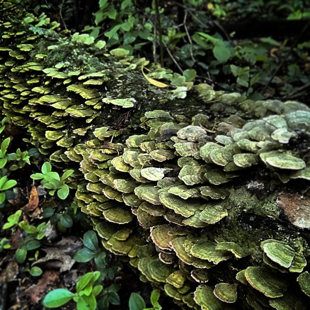

The photographs below were taken using the Google Nexus 6 by Motorola or Google Nexus 6P by Huawei.
Tappan Zee Bridge and Hudson River, during Christmas hike at Nyack Beach State Park

Turkey tail mushrooms, with the sheen of algae, growing along Dunnfield Creek Trail, Worthington State ForestMount Sarrail, across Rawson Lake in Kananaskis Country, AlbertaAn "Ink Pot" pool, two miles beyond the Johnston Canyon Upper Falls trail in Banff National ParkMachu Picchu citadel ruins, as viewed from Machu Picchu MountainNeighborhood cat in Barranco Distric, LimaView of snow-covered Lower East Side, Williamsburg Bridge, and East RiverThe Soliders' and Sailors' Arch at the north tip of Prospect ParkChinatown at dusk; from the second floor, a tenant surveys Mott StreetHudson River and West New York / North Bergen, on an overcast Sunday afternoon